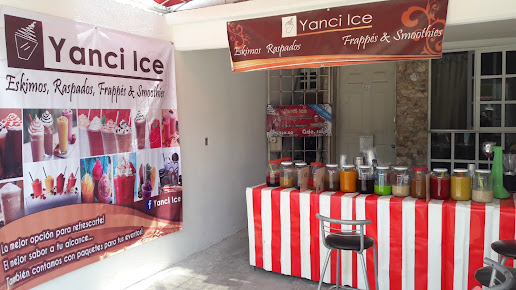
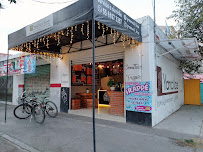
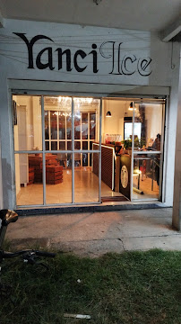

Yanci ICE inició sus operaciones en 2018 como un proyecto familiar en la cocina de una casa, donde se comenzaron a desarrollar las primeras recetas de frappés. La calidad y originalidad de los productos atrajeron rápidamente la atención de conocidos y vecinos, lo que llevó a expandir la producción más allá del entorno doméstico.
En 2020, se dio el primer paso hacia la formalización del negocio con la apertura de un pequeño local. Este espacio, aunque modesto, permitió establecer un punto de venta fijo y mejorar la oferta de productos, consolidando así la marca Yanci ICE en la comunidad local.
Finalmente, en 2023, Yanci ICE trasladó sus operaciones a un local más amplio en Galaxia Cuautitlán. Esta expansión ha permitido no solo aumentar la capacidad de atención al cliente, sino también diversificar la oferta de productos, manteniendo siempre el compromiso con la calidad y la satisfacción del cliente.
